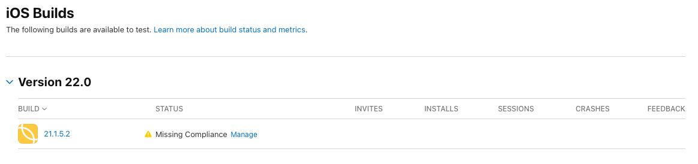
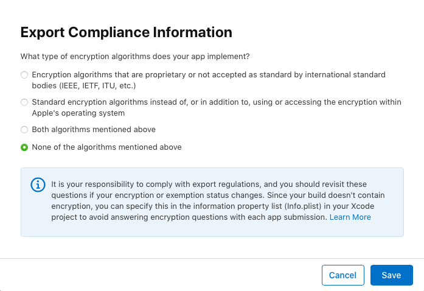
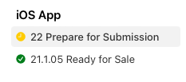
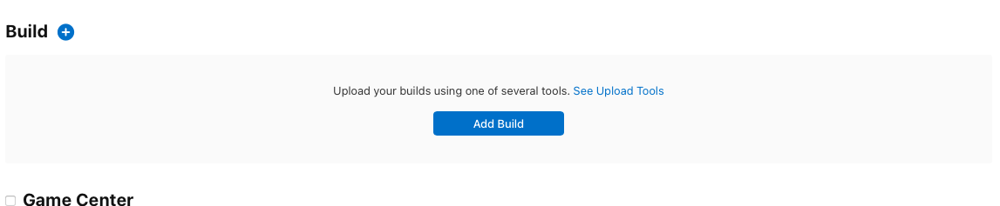
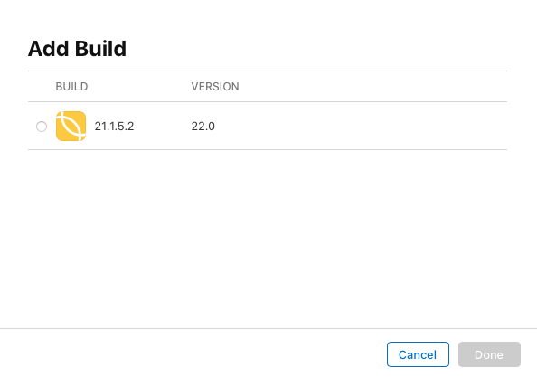

Sestavení a publikace aplikace pro iOS
1. Sestavení aplikace
- Příprava v terminálu
Pozn.: Uvádím zde příkazy, které jsem našel v historii příkazů svého ZSH.
ionic cordova prepare ios ionic cordova build ios
Otevření projektu v Xcode
V Xcode otevřít adresář
orcrm/platforms/ios, který obsahuje vše připravené pro sestavení v rámci- V Signing & Capabilities zkontrolovat, zda je zaškrtnuto Automatically manage signing.
- V Build vybrat Any iOS Device.
- Před každou archivací je potřeba zkontrolovat, zda je v záložce General zvýšeno číslo sestavení.
- Z horního menu vybrat
Product > Archive - Po úspěšném sestavení by se měl zobrazit Organizér. Pokud ne, tak
Window > Organizer
2. Distribuce aplikace
- Nejprve označit nejnovější archiv aplikace a zvolit Validate App.
- Dále vybrat Distribute App.
- Nechat zaškrtnuté App Store Connect.
- Upload (Send app to App Store Connect)
- App Store Connect distribution options: nechat vše zaškrtnuté a Next.
- Automatically manage signing
- Zobrazí se souhrn informací o aplikaci. Kliknout na Upload.
- Pokud proběhne vše v pořádku, dojde k nahrání balíčku na server App Store Connect.
3. Pokračování v App Store Connect
- Nejprve je potřeba zobrazit si v přehledu aplikace záložku TestFlight. Zde jsou pak vidět všechny verze.
- Po nahrání balíčku se toto nové sestavení zobrazí pod danou verzí.
- Nejprve se zobrazí hláška "Processing". Až dojde ke zpracování balíčku, přijde email buď oznamující chyby, které je potřeba opravit nebo dorazí informace, že bylo dokončení zpracování balíčku.
Poté je potřeba opravit hlášku Missing Compliance. Po kliknutí na Manage se zobrazí okno Export Compliance Information. Po zaškrtnutí volby uložit tlačítkem Save.


- Když je k dispozici nová verze, lze ji v záložce AppStore přidat kliknutím na modré +
Po zadání čísla nové verze se v postranním panelu zobrazí číslo verze spolu s hláškou Prepare for Submission

Poté je potřeba přiřadit balíček, který byl nahrán z Xcode, a to kliknutím na Add build

Z daného seznamu vybrat aktuální verzi a kliknout na Done

Poté by mělo být možné odeslat k recenzi kliknutím na Add for Review